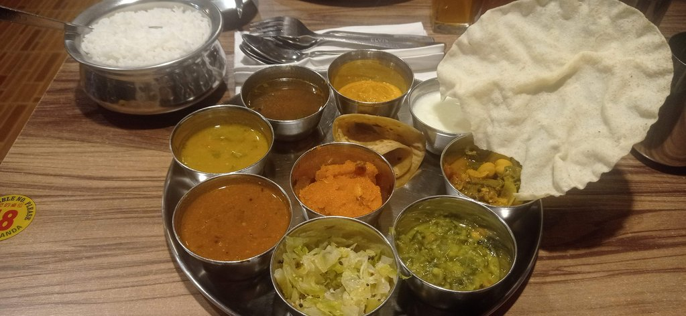
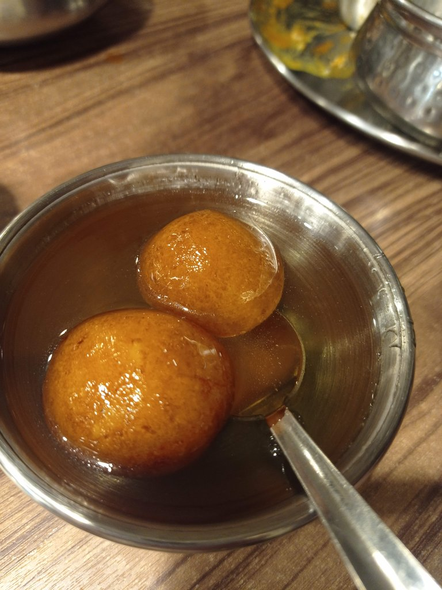

/ Visites à Kuala Lumpur
7h00 Réveil sous la pluie
10h00 Départ en Monorail pour Chinatown, achat des gateaux au pandan du début du voyage. Cookie sur le marché. Nous prenons notre petit déjeuner dans une gargote non loin du marché central. Allons à la poste pour enrichir la collection de timbres de Géraldine, avec de très jolies pièces.
Visite du musée du textile
Visite de la place de l’indépendance. La pluie menace, nous nous réfugions au marché central et faisons des courses ( souvenirs, chemises, etc.)
Retour à pied + train et métro à notre hôtel.
15h00 Direction le quartier des grands malls, dont celui avec le grand 8 à l’intérieur. Quelques achats. On se promène dans le quartier, nous voulons aller visiter uen gallerie d’art, celle-ci est payante (et trop chere pour une gallerie).
Marche jusqu’au centre commercial Pavilion. Bon mille-feuille à la pistache (cher : 21 myr).
Marche jusqu’au quartier de little india pour traverser une grande partie de la ville à pied en cette fin de journée.
Nous retournons évidemment manger au Betel Leaf. Avant de revenir en train à notre hôtel.

